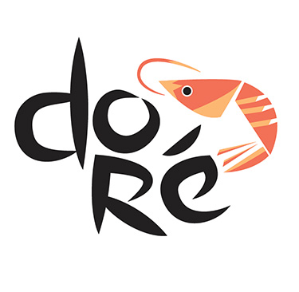
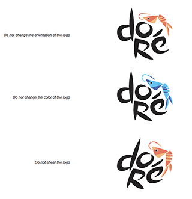
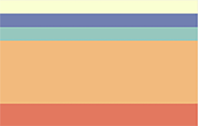
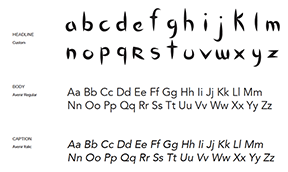
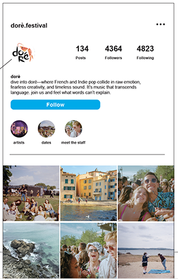
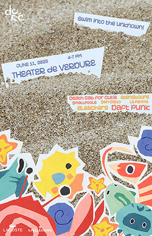
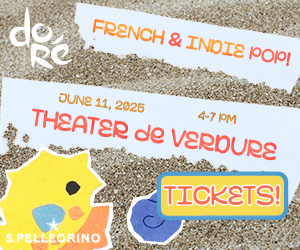
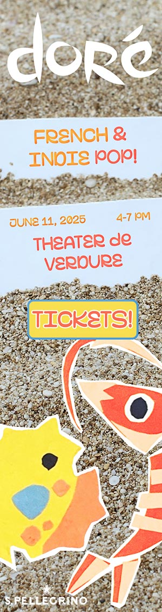
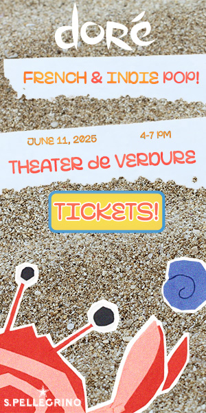

Dore Festival Brand System


Project Overview
For this project, I was tasked with creating a visual identity and promotional campaign for a fictitious music festival derived from a blend of two distinct musical genres. I selected Indie Pop and was randomly assigned French Pop.
Logo & Brand Identity
The festival is named Doré, which means “golden” in French—capturing both the sunny atmosphere.
I developed a complete Brand and Asset Guidelines kit, which includes:
- Logo specifications and usage
- Font selection
- A cohesive color palette with usage guides
- Suggested imagery
- Applications across print, digital, and social platforms
Lockups

Logo limitations
Brand colors
Brand typography
Brand social presence
Advertising Campaign
To promote the Doré Music Festival, I crafted an advertising campaign with both print and digital deliverables.
Deliverables:
- Poster (18"x24") with festival logo, tagline, date/time/location, and two sponsor logos
- Three Digital Ads (inline-rectangle, skyscraper, half-page ad)
Poster
Inline rectangle
Skyscraper
Half-page
My choice of Lacoste and San Pellegrino as sponsors was strategic: both align with the lifestyle...
Co-Branding Strategy & Product Selection
I chose three well-known brands whose identities align with the festival’s cheerful, sun-drenched aesthetic and outdoor experience:
- SunChips (RTE food): The bold, sunny energy of SunChips paired naturally with the Doré identity.
- San Pellegrino (RTD beverage): As an existing sponsor, San Pellegrino added sophistication.
- Conservation Fundraising Wristbands: To unify the theme of ocean life, I created wearable wristbands that fundraise for conservation efforts.
To unify the items, I designed a tote bag as the container item—ideal for festivalgoers outdoors in the sunshine.